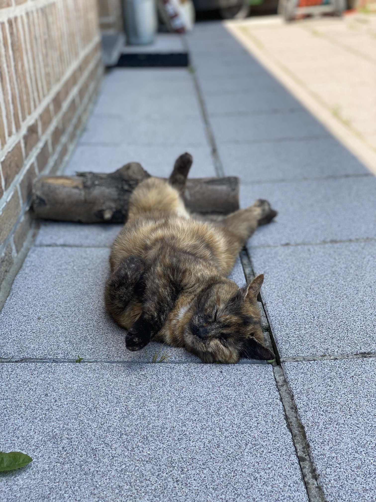

Taby's Adventures
Welcome to the world of Taby's adventures.
Taby enjoys both the garden and the house a lot. She is a stray cat that joined us one day and decided to stay. Now she' a big part of the family. When she's not sleeping, she's playful and adventures. Enjoy some pictures of her adventures around the garden and the house.
